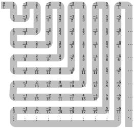
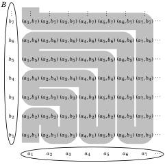
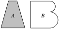
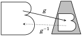
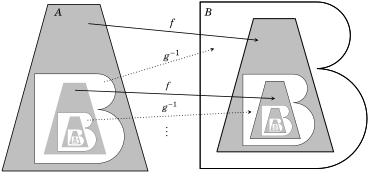

Chapter 14 Cardinality of Sets
This chapter is all about cardinality of sets. At first this looks like a very simple concept. To find the cardinality of a set, just count its elements. If A = {a, b, c, d}, then |A| = 4; if B = {n ∈ ℤ : −5 ≤ n ≤ 5}, then |B| = 11. In this case |A| < |B|. What could be simpler than that?
Actually, the idea of cardinality becomes quite subtle when the sets are infinite. The main point of this chapter is to explain how there are numerous different kinds of infinity, and some infinities are bigger than others. Two sets A and B can both have infinite cardinality, yet |A| < |B|.
14.1 Sets with Equal Cardinalities
We begin with a discussion of what it means for two sets to have the same cardinality. Up until this point we’ve said |A| = |B| if A and B have the same number of elements: Count the elements of A, then count the elements of B. If you get the same number, then |A| = |B|.
Although this is a fine strategy if the sets are finite (and not too big!), it doesn’t apply to infinite sets because we’d never be done counting their elements. We need a new approach that applies to both finite and infinite sets. Here it is:
Definition 14.1 Two sets A and B have the same cardinality, written |A| = |B|, if there exists a bijective function f : A → B. If no such bijective f exists, then the sets have unequal cardinalities, written |A| ≠ |B|.
The above picture illustrates our definition. There is a bijective function f : A → B, so |A| = |B|. The function f matches up A with B. Think of f as describing how to overlay A onto B so that they fit together perfectly.
On the other hand, if A and B are as indicated in either of the following figures, then there can be no bijection f : A → B. (The best we can do is a function that is either injective or surjective, but not both.) Therefore the definition says |A| ≠ |B| in these cases.
Example 14.1 The sets A = {n ∈ ℤ : 0 ≤ n ≤ 5} and B = {n ∈ ℤ : −5 ≤ n ≤ 0} have the same cardinality because there is a bijective function f : A → B given by the rule f (n) = −n.
Several comments are in order. First, if |A| = |B|, there can be lots of bijective functions from A to B. We only need to find one of them in order to conclude |A| = |B|. Second, as bijective functions play such a big role here, we use the word bijection to mean bijective function. Thus the function f (n) = −n from Example 14.1 is a bijection. Also, an injective function is called an injection and a surjective function is called a surjection.
We emphasize and reiterate that Definition 14.1 applies to finite as well as infinite sets. If A and B are infinite, then |A| = |B| provided there exists a bijection f : A → B. If no such bijection exists, then |A| ≠ |B|.
Example 14.2 This example shows that |ℕ| = |ℤ|. To see why this is true, notice that the following table describes a bijection f : ℕ → ℤ.
n 1 2 3 4 5 6 7 8 9 10 11 12 13 14 15 ... f (n) 0 1 −1 2 −2 3 −3 4 −4 5 −5 6 −6 7 −7 ...
Notice that f is described in such a way that it is both injective and surjective. Every integer appears exactly once on the infinitely long second row. Thus, according to the table, given any b ∈ ℤ there is some natural number n with f (n) = b, so f is surjective. It is injective because the way the table is constructed forces f (m) ≠ f (n) whenever m ≠ n. Because of this bijection f : ℕ → ℤ, we must conclude from Definition 14.1 that |ℕ| = |ℤ|.
Example 14.2 may seem slightly unsettling. On one hand it makes sense that |ℕ| = |ℤ| because ℕ and ℤ are both infinite, so their cardinalities are both “infinity.” On the other hand, ℤ may seem twice as large as ℕ because ℤ has all the negative integers as well as the positive ones. Definition 14.1 settles the issue. Because the bijection f : ℕ → ℤ matches up ℕ with ℤ, it follows that |ℕ| = |ℤ|. We summarize this with a theorem.
Theorem 14.1 There exists a bijection f : ℕ → ℤ. Therefore |ℕ| = |ℤ|.
The fact that ℕ and ℤ have the same cardinality might prompt us to compare the cardinalities of other infinite sets. How, for example, do ℕ and ℝ compare? Let’s turn our attention to this.
In fact, |ℕ| ≠ |ℝ|. This was first recognized by Georg Cantor (1845–1918), who devised an ingenious argument to show that there are no surjective functions f : ℕ → ℝ. (This in turn implies that there can be no bijections f : ℕ → ℝ, so |ℕ| ≠ |ℝ| by Definition 14.1.)
We now describe Cantor’s argument for why there are no surjections f : ℕ → ℝ. We will reason informally, rather than writing out an exact proof. Take any arbitrary function f : ℕ → ℝ. Here’s why f can’t be surjective:
Imagine making a table for f , where values of n in ℕ are in the left-hand column and the corresponding values f (n) are on the right. The first few entries might look something as follows. In this table, the real numbers f (n) are written with all their decimal places trailing offto the right. Thus, even though f (1) happens to be the real number 0.4, we write it as 0.40000000...., etc.
n f (n)
1 0 . 4 0 0 0 0 0 0 0 0 0 0 0 0 0...
2 8 . 5 0 0 6 0 7 0 8 6 6 6 9 0 0...
3 7 . 5 0 5 0 0 9 4 0 0 4 4 1 0 1...
4 5 . 5 0 7 0 4 0 0 8 0 4 8 0 5 0...
5 6 . 9 0 0 2 6 0 0 0 0 0 0 5 0 6...
6 6 . 8 2 8 0 9 5 8 2 0 5 0 0 2 0...
7 6 . 5 0 5 0 5 5 5 0 6 5 5 8 0 8...
8 8 . 7 2 0 8 0 6 4 0 0 0 0 4 4 8...
9 0 . 5 5 0 0 0 0 8 8 8 8 0 0 7 7...
10 0 . 5 0 0 2 0 7 2 2 0 7 8 0 5 1...
11 2 . 9 0 0 0 0 8 8 0 0 0 0 9 0 0...
12 6 . 5 0 2 8 0 0 0 8 0 0 9 6 7 1...
13 8 . 8 9 0 0 8 0 2 4 0 0 8 0 5 0...
14 8 . 5 0 0 0 8 7 4 2 0 8 0 2 2 6...
... ...
There is a diagonal shaded band in the table. For each n ∈ ℕ, this band covers the nth decimal place of f (n):
The 1st decimal place of f (1) is the 1st entry on the diagonal.
The 2nd decimal place of f (2) is the 2nd entry on the diagonal.
The 3rd decimal place of f (3) is the 3rd entry on the diagonal.
The 4th decimal place of f (4) is the 4th entry on the diagonal, etc. The diagonal helps us construct a number b ∈ ℝ that is unequal to any f (n). Just let the nth decimal place of b differ from the nth entry of the diagonal. Then the nth decimal place of b differs from the nth decimal place of f (n). In order to be definite, define b to be the positive number less than 1 whose nth decimal place is 0 if the nth decimal place of f (n) does not equal 0, and whose nth decimal place is 1 if the nth decimal place of f (n) equals 0. Thus, for the function f illustrated in the above table, we have
b = 0.01010001001000...
and b has been defined so that, for any n ∈ ℕ, its nth decimal place is unequal to the nth decimal place of f (n). Therefore f (n) ≠ b for every natural number n, meaning f is not surjective.
Since this argument applies to any function f : ℕ → ℝ (not just the one in the above example) we conclude that there exist no bijections f : ℕ → ℝ, so |ℕ| ≠ |ℝ| by Definition 14.1. We summarize this as a theorem.
Theorem 14.2 There exists no bijection f : ℕ → ℝ. Therefore |ℕ| ≠ |ℝ|.
This is our first indication of how there are different kinds of infinities. Both ℕ and ℝ are infinite sets, yet |ℕ| ≠ |ℝ|. We will continue to develop this theme throughout this chapter. The next example shows that the intervals (0,∞) and (0,1) on ℝ have the same cardinality.
∞
Figure 14.1. A bijection f : (0,∞) → (0,1). Imagine a light source at point P. Then f (x) is the point on the y-axis whose shadow is x.
Example 14.3 Show that |(0,∞)| = |(0,1)|. To accomplish this, we need to show that there is a bijection f : (0,∞) → (0,1). We describe this function geometrically. Consider the interval (0,∞) as the positive x-axis of ℝ2. Let the interval (0,1) be on the y-axis as illustrated in Figure 14.1, so that (0,∞) and (0,1) are perpendicular to each other.
The figure also shows a point P = (−1,1). Define f (x) to be the point on (0,1) where the line from P to x ∈ (0,∞) intersects the y-axis. By similar triangles, we have
1 f (x)
= ,
x + 1 x
and therefore
x
f (x) = .
x + 1
If it is not clear from the figure that f : (0,∞) → (0,1) is bijective, then you can verify it using the techniques from Section 12.2. (Exercise 16, below.)
It is important to note that equality of cardinalities is an equivalence relation on sets: it is reflexive, symmetric and transitive. Let us confirm this. Given a set A, the identity function A → A is a bijection, so |A| = |A|. (This is the reflexive property.) For the symmetric property, if |A| = |B|, then there is a bijection f : A → B, and its inverse is a bijection f −1 : B → A, so |B| = |A|. For transitivity, suppose |A| = |B| and |B| = |C|. Then there are bijections f : A → B and g : B → C. The composition g ◦ f : A → C is a bijection (Theorem 12.2), so |A| = |C|.
The transitive property can be useful. If, in trying to show two sets A and C have the same cardinality, we can produce a third set B for which |A| = |B| and |B| = |C|, then transitivity assures us that indeed |A| = |C|. The next example uses this idea.
Example 14.4 Show that |ℝ| = |(0,1)|. Because of the bijection g : ℝ → (0,∞) where g(x) = 2x, we have |ℝ| = |(0,∞)|. Also, Example 14.3 shows that |(0,∞)| = |(0,1)|. Therefore |ℝ| = |(0,1)|.
So far in this chapter we have declared that two sets have “the same cardinality” if there is a bijection between them. They have “different cardinalities” if there exists no bijection between them. Using this idea, we showed that |ℤ| = |ℕ| ≠ |ℝ| = |(0,∞)| = |(0,1)|. So, we have a means of determining when two sets have the same or different cardinalities. But we have neatly avoided saying exactly what cardinality is. For example, we can say that |ℤ| = |ℕ|, but what exactly is |ℤ|, or |ℕ|? What exactly are these things that are equal? Certainly not numbers, for they are too big. And saying they are “infinity” is not accurate, because we now know that there are different types of infinity. So just what kind of mathematical entity is |ℤ|? In general, given a set X , exactly what is its cardinality |X |?
This is a lot like asking what a number is. A number, say 5, is an abstraction, not a physical thing. Early in life we instinctively grouped together certain sets of things (five apples, five oranges, etc.) and conceived of 5 as the thing common to all such sets. In a very real sense, the number 5 is an abstraction of the fact that any two of these sets can be matched up via a bijection. That is, it can be identified with a certain equivalence class of sets under the “has the same cardinality as” relation. (Recall that this is an equivalence relation.) This is easy to grasp because our sense of numeric quantity is so innate. But in exactly the same way we can say that the cardinality of a set X is what is common to all sets that can be matched to X via a bijection. This may be harder to grasp, but it is really no different from the idea of the magnitude of a (finite) number.
In fact, we could be concrete and define |X | to be the equivalence class of all sets whose cardinality is the same as that of X . This has the advantage of giving an explicit meaning to |X |. But there is no harm in taking the intuitive approach and just interpreting the cardinality |X | of a set X to be a measure of the “size” of X . The point of this section is that we have a means of deciding whether two sets have the same size or different sizes.
Exercises for Section 14.1
A. Show that the two given sets have equal cardinality by describing a bijection from one to the other. Describe your bijection with a formula (not as a table).
- ℝ and (0,∞)
- ℝ and (,∞)
- ℝ and (0,1)
- The set of even integers and
- A = {3k : k ∈ ℤ} and B = {7k : k ∈ ℤ}
- ℕ and S = : n ∈ ℕ}
- ℤ and S = {...,\(\frac{1}{8}\),\(\frac{1}{4}\),\(\frac{1}{2}\),1,2,4,8,16,...}
- ℤ and S = {x ∈ ℝ : sin x = 1}
- {0,1} × ℕ and ℕ the set of odd integers
- {0,1} × ℕ and ℤ
- [0,1] and (0,1)
- ℕ and ℤ (Suggestion: use Exercise 18 of Section 12.2.)
- 𝒫(ℕ) and 𝒫(ℤ) (Suggestion: use Exercise 12, above.)
- ℕ × ℕ and {(n, m) ∈ ℕ × ℕ : n ≤ m}
B. Answer the following questions concerning bijections from this section.
- Find a formula for the bijection f in Example 14.2 (page 270).
- Verify that the function f in Example 14.3 (page 273) is a bijection.
14.2 Countable and Uncountable Sets
Let’s summarize the main points from the previous section.
1. |A| = |B| if and only if there exists a bijection A → B.
2. |ℕ| = |ℤ| because there exists a bijection ℕ → ℤ.
3. |ℕ| ≠ |ℝ| because there exists no bijection ℕ → ℝ.
Thus, even though ℕ, ℤ and ℝ are all infinite sets, their cardinalities are not all the same. The sets ℕ and ℤ have the same cardinality, but ℝ’s cardinality is different from that of both the other sets. This means infinite sets can have different sizes. We now make some definitions to put words and symbols to this phenomenon.
In a certain sense you can count the elements of ℕ; you can count its elements offas 1,2,3,4,..., but you’d have to continue this process forever to count the whole set. Thus we will call ℕ a countably infinite set, and the same term is used for any set whose cardinality equals that of ℕ.
Definition 14.2 Suppose A is a set. Then A is countably infinite if |ℕ| = |A|, that is, if there exists a bijection ℕ → A. The set A is countable if it is finite or countably infinite. The set A is uncountable if it is infinite and |ℕ| ≠ |A|, that is, if A is infinite and there is no bijection ℕ → A.
Thus ℤ is countably infinite but ℝ is uncountable. This section deals mainly with countably infinite sets. Uncountable sets are treated later.
If A is countably infinite, then |ℕ| = |A|, so there is a bijection f : ℕ → A. Think of f as “counting” the elements of A. The first element of A is f (1), followed by f (2), then f (3) and so on. It makes sense to think of a countably infinite set as the smallest type of infinite set, because if the counting process stopped, the set would be finite, not infinite; a countably infinite set has the fewest elements that a set can have and still be infinite. We reserve the special symbol ℵ0 to stand for the cardinality of countably infinite sets.
Definition 14.3 The cardinality of the natural numbers is denoted as ℵ0. That is, |ℕ| = ℵ0. Thus any countably infinite set has cardinality ℵ0.
(The symbol ℵ is the first letter in the Hebrew alphabet, and is pronounced “aleph.” The symbol ℵ0 is pronounced “aleph naught.”) The summary of facts at the beginning of this section shows |ℤ| = ℵ0 and |ℝ| ≠ ℵ0.
Example 14.5 Let E = {2k : k ∈ ℤ} be the set of even integers. The function f : ℤ → E defined as f (n) = 2n is easily seen to be a bijection, so we have |ℤ| = |E|. Thus, as |ℕ| = |ℤ| = |E|, the set E is countably infinite and |E| = ℵ0.
Here is a significant fact: The elements of any countably infinite set A can be written in an infinitely long list a1, a2, a3, a4,... that begins with some element a1 ∈ A and includes every element of A. For example, the set E in the above example can be written in list form as 0, 2, −2, 4, −4, 6, −6, 8, −8,... The reason that this can be done is as follows. Since A is countably infinite, Definition 14.2 says there is a bijection f : ℕ → A. This allows us to list out the set A as an infinite list f (1), f (2), f (3), f (4),... Conversely, if the elements of A can be written in list form as a1, a2, a3,..., then the function f : ℕ → A defined as f (n) = an is a bijection, so A is countably infinite. We summarize this as follows.
Theorem 14.3 A set A is countably infinite if and only if its elements can be arranged in an infinite list a1, a2, a3, a4,...
As an example of how this theorem might be used, let P denote the set of all prime numbers. Since we can list its elements as 2,3,5,7,11,13,..., it follows that the set P is countably infinite.
As another consequence of Theorem 14.3, note that we can interpret the fact that the set ℝ is not countably infinite as meaning that it is impossible to write out all the elements of ℝ in an infinite list. (After all, we tried to do that in the table on page 271, and failed!)
This raises a question. Is it also impossible to write out all the elements of ℚ in an infinite list? In other words, is the set ℚ of rational numbers countably infinite or uncountable? If you start plotting the rational numbers on the number line, they seem to mostly fill up ℝ. Sure, some numbers such as , π and e will not be plotted, but the dots representing rational numbers seem to predominate. We might thus expect ℚ to be uncountable. However, it is a surprising fact that ℚ is countable. The proof presented below arranges all the rational numbers in an infinitely long list.
Theorem 14.4 The set ℚ of rational numbers is countably infinite.
Proof. To prove this, we just need to show how to write the set ℚ in list form. Begin by arranging all rational numbers in an infinite array. This is done by making the following chart. The top row has a list of all integers, beginning with 0, then alternating signs as they increase. Each column headed by an integer k contains all the fractions (in reduced form) with numerator k. For example, the column headed by 2 contains the fractions \(\frac{2}{1}\),\(\frac{2}{3}\),\(\frac{2}{5}\),\(\frac{2}{7}\),..., and so on. It does not contain\(\frac{2}{2}\),\(\frac{2}{4}\),\(\frac{2}{6}\), etc., because those are not reduced, and in fact their reduced forms appear in the column headed by 1. You should examine this table and convince yourself that it contains all rational numbers in ℚ.
0 1 −1 2 −2 3 −3 4 −4 5 −5 ···
\(\frac{0}{1}\) \(\frac{1}{1}\) \(\frac{-1}{1}\) \(\frac{2}{1}\) \(\frac{-2}{1}\) \(\frac{3}{1}\) \(\frac{-3}{1}\) \(\frac{4}{1}\) \(\frac{-4}{1}\) \(\frac{5}{1}\) \(\frac{-5}{1}\) ···
\(\frac{1}{2}\) \(\frac{-1}{2}\) \(\frac{2}{3}\) \(\frac{-2}{3}\) \(\frac{3}{2}\) \(\frac{-3}{2}\) \(\frac{4}{3}\) \(\frac{-4}{3}\) \(\frac{5}{2}\) \(\frac{-5}{2}\) ···
\(\frac{1}{3}\) \(\frac{-1}{3}\) \(\frac{2}{5}\) \(\frac{-2}{5}\) \(\frac{3}{4}\) \(\frac{-3}{4}\) \(\frac{4}{5}\) \(\frac{-4}{5}\) \(\frac{5}{3}\) \(\frac{-5}{3}\) ···
\(\frac{1}{4}\) \(\frac{-1}{4}\) \(\frac{2}{7}\) \(\frac{-2}{7}\) \(\frac{3}{5}\) \(\frac{-3}{5}\) \(\frac{4}{7}\) \(\frac{-4}{7}\) \(\frac{5}{4}\) \(\frac{-5}{4}\) ···
\(\frac{1}{5}\) \(\frac{-1}{5}\) \(\frac{2}{9}\) \(\frac{-2}{9}\) \(\frac{3}{7}\) \(\frac{-3}{7}\) \(\frac{4}{9}\) \(\frac{-4}{9}\) \(\frac{5}{6}\) \(\frac{-5}{6}\) ···
\(\frac{1}{6}\) \(\frac{-1}{6}\) \(\frac{2}{11}\) \(\frac{-2}{11}\) \(\frac{3}{8}\) \(\frac{-3}{8}\) \(\frac{4}{11}\) \(\frac{-4}{11}\) \(\frac{5}{7}\) \(\frac{-5}{7}\) ···
\(\frac{1}{7}\) \(\frac{-1}{7}\) \(\frac{2}{13}\) \(\frac{-2}{13}\) \(\frac{3}{10}\) \(\frac{-3}{10}\) \(\frac{4}{13}\) \(\frac{-4}{13}\) \(\frac{5}{8}\) \(\frac{-5}{8}\) ···
... ... ... ... ... ... ... ... ... ... ...
Next, draw an infinite path in this array, beginning at\(\frac{0}{1}\) and snaking back and forth as indicated below. Every rational number is on this path.
0 1 −1 2 −2 3 −3 4 −4 5 −5 ···

Beginning at\(\frac{0}{1}\) and following the path, we get an infinite list of all rational numbers:
1 1 2 2 1 1 1 1 2 2 2 2 3 3 3
0, 1, , − , −1, 2, , , − , , , − , , − , − , − , −2, 3, , , , ...
2 2 3 5 3 3 4 4 7 7 5 3 2 4 5
By Theorem 14.3, it follows that ℚ is countably infinite, that is, |ℚ| = |ℕ|. ■
It is also true that the Cartesian product of two countably infinite sets is itself countably infinite, as our next theorem states.
Theorem 14.5 If A and B are both countably infinite, then so is A × B.
Proof. Suppose A and B are both countably infinite. By Theorem 14.3, we know we can write A and B in list form as
A = {a1, a2, a3, a4,...},
B = {b1, b2, b3, b4,...}.
Figure 14.2 shows how to form an infinite path winding through all of A ×B. Therefore A × B can be written in list form, so it is countably infinite. ■

A
Figure 14.2. A product of two countably infinite sets is countably infinite
As an example of a consequence of this theorem, notice that since ℚ is countably infinite, the set ℚ × ℚ is also countably infinite.
Recall that the word “corollary” means a result that follows easily from some other result. We have the following corollary of Theorem 14.5.
Corollary 14.1 Given n countably infinite sets A1, A2,..., An, with n ≥ 2, the Cartesian product A1 × A2 ×···× An is also countably infinite.
Proof. The proof is by induction on n. For the basis step, notice that when n = 2 the statement asserts that for countably infinite sets A1 and A2, the product A1 × A2 is countably infinite, and this is true by Theorem 14.5.
Assume that for some k ≥ 2, any product A1 × A2 ×···× Ak of countably infinite sets is countably infinite. Consider a product A1 × A2 ×···× Ak × Ak+1 of k + 1 countably infinite sets. It is easy to confirm that the function
f : A1 × A2 × A3 ×···× Ak × Ak+1 −→ (A1 × A2 × A3 ×···× Ak) × Ak+1
f (x1, x2,..., xk, xk+1) = ((x1, x2,..., xk), xk+1)
is bijective, so A1 × A2 × A3 ×···× Ak × A = (A1 × A2 × A3 ×···× Ak)× A. By the induction hypothesis, (A1 × A2 × A3 ×···× Ak) × Ak+1 is a product of two countably infinite sets, so it is countably infinite by Theorem 14.5. As noted above, A1 × A2 × A3 ×···× Ak × Ak+1 has the same cardinality as the set (A1 × A2 × A3 ×···× Ak) × Ak+1, so it too is countably infinite. ■
Theorem 14.6 If A and B are both countably infinite, then their union A ∪ B is countably infinite.
Proof. Suppose A and B are both countably infinite. By Theorem 14.3, we know we can write A and B in list form as
A = {a1, a2, a3, a4,...},
B = {b1, b2, b3, b4,...}.
We can “shuffle” A and B into one infinite list for A ∪ B as follows.
A ∪ B = {a1, b1, a2, b2, a3, b3, a4, b4,...}.
(We agree not to list an element twice if it belongs to both A and B.) Thus A ∪ B is countably infinite by Theorem 14.3. ■
Exercises for Section 14.2
- Prove that the set A = {ln(n) : n ∈ ℕ} ⊆ ℝ is countably infinite.
- Prove that the set A = {(m, n) ∈ ℕ × ℕ : m ≤ n} is countably infinite.
- Prove that the set A = {(5n,−3n) : n ∈ ℤ} is countably infinite.
- Prove that the set of all irrational numbers is uncountable. (Suggestion: Consider proof by contradiction using Theorems 14.4 and 14.6.)
- Prove or disprove: There exists a countably infinite subset of the set of irrational numbers.
- Prove or disprove: There exists a bijective function f : ℚ → ℝ.
- Prove or disprove: The set ℚ100 is countably infinite.
- Prove or disprove: The set ℤ × ℚ is countably infinite.
- Prove or disprove: The set {0,1} × ℕ is countably infinite.
- Prove or disprove: The set A = : n ∈ ℕ} countably infinite.
- Describe a partition of ℕ that divides ℕ into eight countably infinite subsets.
- Describe a partition of ℕ that divides ℕ into ℵ0 countably infinite subsets.
- Prove or disprove: If A = {X ⊆ ℕ : X is finite}, then |A| = ℵ0.
- Suppose A = {(m, n) ∈ ℕ × ℝ : n = πm}. Is it true that |ℕ| = |A|?
- Theorem 14.5 implies that ℕ × ℕ is countably infinite. Construct an alternate proof of this fact by showing that the function ϕ : ℕ × ℕ → ℕ defined as ϕ(m, n) = 2n−1(2m − 1) is bijective.
14.3 Comparing Cardinalities
At this point we know that there are at least two different kinds of infinity. On one hand, there are countably infinite sets such as ℕ, of cardinality ℵ0. Then there is the uncountable set ℝ. Are there other kinds of infinity beyond these two kinds? The answer is “yes,” but to see why we first need to introduce some new definitions and theorems.
Our first task will be to formulate a definition of what we mean by |A| < |B|. Of course if A and B are finite we know exactly what this means: |A| < |B| means that when the elements of A and B are counted, A is found to have fewer elements than B. But this process breaks down if A or B is infinite, for then the elements can’t be counted.
The language of functions helps us overcome this difficulty. Notice that for finite sets A and B it is intuitively clear that |A| < |B| if and only if there exists an injective function f : A → B but there is no bijective function f : A → B. The following diagram illustrates this:
We will use this idea to define what is meant by |A| < |B| and |A| ≤|B|. For emphasis, the following definition also restates what is meant by |A| = |B|.
Definition 14.4 Suppose A and B are sets.
1. |A| = |B| means there is a bijection A → B.
2. |A| < |B| means there is an injection A → B, but no bijection A → B.
3. |A| ≤|B| means there is an injection A → B.
For example, consider ℕ and ℝ. The function f : ℕ → ℝ defined as f (n) = n is clearly injective, but it is not surjective because given the element\(\frac{1}{2}\) ∈ ℝ, we have f (n) ≠\(\frac{1}{2}\) for every n ∈ ℕ. In fact, Theorem 14.2 of Section 14.1 asserts that there is no surjection ℕ → ℝ, and hence no bijections either. Definition 14.4 yields
|ℕ| < |ℝ|. (14.1)
Said differently, ℵ0 < |ℝ|.
Is there a set X for which |ℝ| < |X |? The answer is “yes.” The next theorem implies |ℝ| < |𝒫(ℝ)|. (Recall that 𝒫(A) denotes the power set of A.)
Theorem 14.7 If A is any set, then |A| < |𝒫(A)|.
Proof. Before beginning the proof, we remark that this statement is obvious if A is finite, for then |A| < 2|A| = |𝒫(A)|. But our proof must apply to all sets A, both finite and infinite, so it must use Definition 14.4.
We prove the theorem with direct proof. Let A be an arbitrary set. According to Definition 14.4, to prove |A| < |𝒫(A)| we must show that there is an injection f : A → 𝒫(A), but no bijection f : A → 𝒫(A).
To see that there is an injection f : A → 𝒫(A), define f by the rule f (x) = {x}. In words, f sends any element x of A to the one-element set {x} ∈ 𝒫(A). Then f : A → 𝒫(A) is injective, as follows. Suppose f (x) = f (y). Then {x} = {y}. Now, the only way that {x} and {y} can be equal is if x = y, so it follows that x = y. Thus f is injective.
Next we need to show that there exists no bijection A → 𝒫(A). We will verify this by proving that there is no surjection A → 𝒫(A). Take an arbitrary function f : A → 𝒫(A). To show f is not surjective we will produce a set B ∈ 𝒫(A) for which f (a) ≠ B for all a ∈ A. Notice that for any element x ∈ A, we have f (x) ∈ 𝒫(A), that is, f (x) ⊆ A. Thus f is a function sending elements of A to subsets of A. It follows that for any x ∈ A, either x ∈ f (x) or x ∉ f (x). Using this idea, define the following element B ∈ 𝒫(A):
B = {x ∈ A : x ∉ f (x)} ⊆ A.
Take an arbitrary a ∈ A. The following two cases show that f (a) ≠ B. Case 1. If a ∉ f (a), then the definition of B implies a ∈ B. Consequently, f (a) = B is impossible, for it would mean a ∉ B and a ∈ B. Case 2. If a ∈ f (a), then the definition of B implies a ∉ B. Consequently, f (a) = B is impossible, for it would mean a ∈ B and a ∉ B. So f (a) ≠ B for all a ∈ A, and hence f is not surjective. As this holds for any function f : A → 𝒫(A), there are no surjective functions f : A → 𝒫(A). Consequently there are no such bijections either.
In conclusion, we have seen that there exists an injection A → 𝒫(A) but no bijection A → 𝒫(A), so Definition 14.4 implies that |A| < |𝒫(A)|. ■
Beginning with the set A = ℕ and applying Theorem 14.7 over and over again, we get the following chain of infinite cardinalities.
ℵ0 = |ℕ| < |𝒫(ℕ)| < |𝒫(𝒫(ℕ))| < |𝒫(𝒫(𝒫(ℕ)))| < ··· (14.2)
Thus there is an infinite sequence of different types of infinity, starting with ℵ0 and becoming ever larger. The set ℕ is countable, and all the sets 𝒫(ℕ), 𝒫(𝒫(ℕ)), etc., are uncountable.
In the next section we will prove that |𝒫(ℕ)| = |ℝ|. Thus |ℕ| and |ℝ| are the first two entries in the chain (14.2) above. They are just two relatively tame infinities in a long list of other wild and exotic infinities.
Unless you plan on studying advanced set theory or the foundations of mathematics, you are unlikely to ever encounter any types of infinity beyond ℵ0 and |ℝ|. Still you will in future mathematics courses need to distinguish between countably infinite and uncountable sets, so we close with two final theorems that can help you do this.
Theorem 14.8 An infinite subset of a countably infinite set is countably infinite.
Proof. Suppose A is an infinite subset of the countably infinite set B. As B is countably infinite, its elements can be written in a list b1, b2, b3, b4,... Then we can also write A’s elements in list form by proceeding through the elements of B, in order, and selecting those that belong to A. Thus A can be written in list form, and since A is infinite, its list will be infinite. Consequently A is countably infinite. ■
Theorem 14.9 If U ⊆ A, and U is uncountable, then A is uncountable.
Proof. For the sake of contradiction say that U ⊆ A, and U is uncountable but A is not uncountable. Then since U ⊆ A and U is infinite, then A must be infinite too. Since A is infinite, and not uncountable, it must be countably infinite. Then U is an infinite subset of a countably infinite set A, so U is countably infinite by Theorem 14.8. Thus U is both uncountable and countably infinite, a contradiction. ■
Theorems 14.8 and 14.9 can be useful when we need to decide whether a set is countably infinite or uncountable. They sometimes allow us to decide its cardinality by comparing it to a set whose cardinality is known.
For example, suppose we want to decide whether or not the set A = ℝ2 is uncountable. Since the x-axis U = {(x,0) : x ∈ ℝ} ⊆ ℝ2 has the same cardinality as ℝ, it is uncountable. Theorem 14.9 implies that ℝ2 is uncountable. Other examples can be found in the exercises.
Exercises for Section 14.3
- Suppose B is an uncountable set and A is a set. Given that there is a surjective function f : A → B, what can be said about the cardinality of A?
- Prove that the set ℂ of complex numbers is uncountable.
- Prove or disprove: If A is uncountable, then |A| = |ℝ|.
- Prove or disprove: If A ⊆ B ⊆ C and A and C are countably infinite, then B is countably infinite.
- Prove or disprove: The set {0,1} × ℝ is uncountable.
- Prove or disprove: Every infinite set is a subset of a countably infinite set.
- Prove or disprove: If A ⊆ B and A is countably infinite and B is uncountable, then B − A is uncountable.
- Prove or disprove: The set {(a1,a2,a3,...) : ai ∈ ℤ} of infinite sequences of integers is countably infinite.
- Prove that if A and B are finite sets with |A| = |B|, then any injection f : A → B is also a surjection. Show this is not necessarily true if A and B are not finite.
- Prove that if A and B are finite sets with |A| = |B|, then any surjection f : A → B is also an injection. Show this is not necessarily true if A and B are not finite.
14.4 The Cantor-Bernstein-Schröder Theorem
An often used property of numbers is that if a ≤ b and b ≤ a, then a = b. It is reasonable to ask if the same property applies to cardinality. If |A| ≤|B| and |B| ≤|A|, is it true that |A| = |B|? This is in fact true, and this section’s goal is to prove it. This will yield an alternate (and highly effective) method of proving that two sets have the same cardinality.
Recall (Definition 14.4) that |A| ≤|B| means that there is an injection f : A → B. Likewise, |B| ≤|A| implies that there is an injection g : B → A.
Our aim is to show that if |A| ≤|B| and |B| ≤|A|, then |A| = |B|. In other words, we aim to show that if there are injections f : A → B and g : B → A, then there is a bijection h : A → B. The proof of this fact, though not particularly difficult, is not entirely trivial, either. The fact that f and g guarantee that such an h exists is called the the Cantor-Bernstein-Schröder theorem. This theorem is very useful for proving two sets A and B have the same cardinality: it says that instead of finding a bijection A → B, it suffices to find injections A → B and B → A. This is useful because injections are often easier to find than bijections.
We will prove the Cantor-Bernstein-Schröder theorem, but before doing so let’s work through an informal visual argument that will guide us through (and illustrate) the proof.
Suppose there are injections f : A → B and g : B → A. We want to use them to produce a bijection h : A → B. Sets A and B are sketched below. For clarity, each has the shape of the letter that denotes it, and to help distinguish them the set A is shaded.

Figure 14.3. The sets A and B
The injections f : A → B and g : B → A are illustrated in Figure 14.4. Think of f as putting a “copy” f (A) = {f (x) : x ∈ A} of A into B, as illustrated. This copy, the range of f , does not fill up all of B (unless f happens to be surjective). Likewise, g puts a “copy” g(B) of B into A. Because they are not necessarily bijective, neither f nor g is guaranteed to have an inverse. But the map g : B → g(B) from B to g(B) = {g(x) : x ∈ B} is bijective, so there is an inverse g−1 : g(B) → B. (We will need this inverse soon.)

Figure 14.4. The injections f : A → B and g : B → A
Consider the chain of injections illustrated in Figure 14.5. On the left, g puts a copy of B into A. Then f puts a copy of A (containing the copy of B) into B. Next, g puts a copy of this B-containing-A-containing-B into A, and so on, always alternating g and f .
···
Figure 14.5. An infinite chain of injections
Let’s analyze our infinite sequence B → A → B → A → B → A →···
The first time A occurs in this sequence, it has a shaded region A − g(B). In the second occurrence of A, the shaded region is (A− g(B))∪(g◦ f )(A− g(B)). In the third occurrence of A, the shaded region is
(A − g(B)) ∪ (g ◦ f )(A − g(B)) ∪ (g ◦ f ◦ g ◦ f )(A − g(B)).
To tame the notation, let’s say (g ◦ f )2 = (g ◦ f ) ◦ (g ◦ f ), and (g ◦ f )3 = (g ◦ f ) ◦ (g ◦ f ) ◦ (g ◦ f ), and so on. Let’s also agree that (g ◦ f )0 = ιA, that is, it is the identity function on A. Then the shaded region of the nth occurrence of A in the sequence is
n−1
(g ◦ f )k(A − g(B)).
k=0
This process divides A into gray and white regions: the gray region is
∞
G = (g ◦ f )k(A − g(B)),
k=0
and the white region is A − G. (See Figure 14.6.)
Figure 14.6 suggests our desired bijection h : A → B. The injection f sends the gray areas on the left bijectively to the gray areas on the right. The injection g−1 : g(B) → B sends the white areas on the left bijectively to the white areas on the right. We can thus define h : A → B so that h(x) = f (x) if x is a gray point, and h(x) = g−1(x) if x is a white point.

Figure 14.6. The bijection h : A → B
This informal argument suggests that given injections f : A → B and g : B → A, there is a bijection h : A → B. But it is not a proof. We now present this as a theorem and tighten up our reasoning in a careful proof, with the above diagrams and ideas as a guide.
Theorem 14.10 (The Cantor-Bernstein-Schröder Theorem) If |A| ≤|B| and |B| ≤|A|, then |A| = |B|. In other words, if there are injections f : A → B and g : B → A, then there is a bijection h : A → B.
Proof. (Direct) Suppose there are injections f : A → B and g : B → A. Then, in particular, g : B → g(B) is a bijection from B onto the range of g, so it has an inverse g−1 : g(B) → B. (Note that g : B → A itself has no inverse g−1 : A → B unless g is surjective.) Consider the subset
∞
G = (g ◦ f )k(A − g(B)) ⊆ A.
k=0
Let W = A − G, so A = G ∪ W is partitioned into two sets G (think gray) and W (think white). Define a function h : A → B as
f (x) if x ∈ G
h(x) = −1
g (x) if x ∈ W.
Notice that this makes sense: if x ∈ W, then x ∉ G, so x ∉ A − g(B) ⊆ G, hence x ∈ g(B), so g−1(x) is defined.
To finish the proof, we must show that h is both injective and surjective.
For injective, we assume h(x) = h(y), and deduce x = y. There are three cases to consider. First, if x and y are both in G, then h(x) = h(y) means f (x) = f (y), so x = y because f is injective. Second, if x and y are both in W, then h(x) = h(y) means g−1(x) = g−1(y), and applying g to both sides gives x = y. In the third case, one of x and y is in G and the other is in W. Say x ∈ G and y ∈ W. The definition of G gives x = (g ◦ f )k(z) for some k ≥ 0 and z ∈ A − g(B). Note h(x) = h(y) now implies f (x) = g−1(y), that is, f ((g ◦ f )k(z)) = g−1(y). Applying g to both sides gives (g ◦ f )k+1(z) = y, which means y ∈ G. But this is impossible, as y ∈ W. Thus this third case cannot happen. But in the first two cases h(x) = h(y) implies x = y, so h is injective.
To see that h is surjective, take any b ∈ B. We will find an x ∈ A with h(x) = b. Note that g(b) ∈ A, so either g(b) ∈ W or g(b) ∈ G. In the first case, h(g(b)) = g−1(g(b)) = b, so we have an x = g(b) ∈ A for which h(x) = b. In the second case, g(b) ∈ G. The definition of G shows
g(b) = (g ◦ f )k(z)
for some z ∈ A − g(B) and k ≥ 0. In fact we have k > 0, because k = 0 would give g(b) = (g ◦ f )0(z) = z ∈ A − g(B), but clearly g(b) ∉ A − g(B). Thus
g(b) = (g ◦ f ) ◦ (g ◦ f )k−1(z)
= g (f ((g ◦ f )k−1(z))).
Because g is injective, this implies
b = f ((g ◦ f )k−1(z)).
Let x = (g ◦ f )k−1(z), so x ∈ G by definition of G. Observe that h(x) = f (x) = f ((g ◦ f )k−1(z)) = b. We have now seen that for any b ∈ B, there is an x ∈ A for which h(x) = b. Thus h is surjective.
Since h : A → B is both injective and surjective, it is also bijective. ■
Here are some examples illustrating how the Cantor-Bernstein-Schröder theorem can be used. This includes a proof that |ℝ| = |𝒫(ℕ)|.
Example 14.6 The intervals [0,1) and (0,1) in ℝ have equal cardinalities. Surely this fact is plausible, for the two intervals are identical except for the endpoint 0. Yet concocting a bijection [0,1) → (0,1) is tricky. (Though not particularly difficult: see the solution of Exercise 11 of Section 14.1.)
For a simpler approach, note that f (x) =\(\frac{1}{4}\) +\(\frac{1}{2}\) x is an injection [0,1) → (0,1). Also, g(x) = x is an injection (0,1) → [0,1). The Cantor-Bernstein-Schröder theorem guarantees a bijection h : [0,1) → (0,1), so |[0,1)| = |(0,1)|.
Theorem 14.11 The sets ℝ and 𝒫(ℕ) have the same cardinality.
Proof. Example 14.4 shows that |ℝ| = |(0,1)|, and Example 14.6 shows |(0,1)| = |[0,1)|. Thus |ℝ| = |[0,1)|, so to prove the theorem we just need to show that |[0,1)| = |𝒫(ℕ)|. By the Cantor-Bernstein-Schröder theorem, it suffices to find injections f : [0,1) → 𝒫(ℕ) and g : 𝒫(ℕ) → [0,1).
To define f : [0,1) → 𝒫(ℕ), we use the fact that any number in [0,1) has a unique decimal representation 0.b1b2b3b4 ..., where each bi one of the digits 0,1,2,...,9, and there is not a repeating sequence of 9’s at the end. (Recall that, e.g., 0.359999 = 0.360, etc.) Define f : [0,1) → 𝒫(ℕ) as
f (0.b1b2b3b4 ...) = {10b1, 102b2, 103b3, ...} − {0}.
For example, f (0.121212) = {10,200,1000,20000,100000,...}, and f (0.05) = {500}. Also f (0.5) = f (0.50) = {50}. To see that f is injective, take two unequal numbers 0.b1b2b3b4 ... and 0.d1d2d3d4 ... in [0,1). Then bi ≠ di for some index i. Now, either bi ≠ 0 or di ≠ 0; without loss of generality say bi ≠ 0. Then bi10i ∈ f (0.b1b2b3b4 ...) but bi10i ∉ f (0.d1d2d3d4 ...), so f (0.b1b2b3b4 ...) ≠ f (0.d1d2d3d4 ...). Consequently f is injective.
Next we define g : 𝒫(ℕ) → [0,1). For X ∈ 𝒫(ℕ) (that is, for X ⊆ ℕ), let g(X ) = 0.b1b2b3b4 ... be the base-10 decimal number for which bi = 1 if i ∈ X and bi = 0 if i ∉ X . For example, g({1,3}) = 0.101000, and g({2,4,6,8,...}) = 0.01010101. Also g(∅) = 0 and g(ℕ) = 0.1111. Note that g is injective: If X ≠ Y , then there is at least one integer i that belongs to one of X or Y , but not the other. Consequently g(X ) ≠ g(Y ) because they differ in the ith decimal place. This shows g is injective.
From the injections f : [0,1) → 𝒫(ℕ) and g : 𝒫(ℕ) → [0,1), the CantorBernstein-Schröder theorem guarantees a bijection h : [0,1) → 𝒫(ℕ). Hence |[0,1)| = |𝒫(ℕ)|. As |ℝ| = |[0,1)|, we conclude |ℝ| = |𝒫(ℕ)|. ■
We know that |ℝ| ≠ |ℕ|. But we just proved |ℝ| = |𝒫(ℕ)|. This suggests that the cardinality of ℝ is not “too far” from |ℕ| = ℵ0. We close with a few informal remarks on this mysterious relationship between ℵ0 and |ℝ|.
We established earlier in this chapter that ℵ0 < |ℝ|. For nearly a century after Cantor formulated his theories on infinite sets, mathematicians struggled with the question of whether or not there exists a set A for which
ℵ0 < |A| < |ℝ|.
It was commonly suspected that no such set exists, but no one was able to prove or disprove this. The assertion that no such A exists came to be called the continuum hypothesis.
Theorem 14.11 states that |ℝ| = |𝒫(ℕ)|. Placing this in the context of the chain (14.2) on page 282, we have the following relationships.
ℵ0 |ℝ|
= =
|ℕ| < |𝒫(ℕ)| < |𝒫(𝒫(ℕ))| < |𝒫(𝒫(𝒫(ℕ)))| < ···
From this, we can see that the continuum hypothesis asserts that no set has a cardinality between that of ℕ and its power set.
Though this may seem intuitively plausible, it eluded proof since Cantor first posed it in the 1880s. In fact, the real state of affairs seems almost paradoxical. In 1931, the logician Kurt Gödel proved that for any sufficiently strong and consistent axiomatic system, there exist statements which can neither be proved nor disproved within the system.
Later he proved that the negation of the continuum hypothesis cannot be proved within the standard axioms of set theory (i.e., the Zermelo-Fraenkel axioms, mentioned in Section 1.10). This meant that either the continuum hypothesis is false and cannot be proven false, or it is true.
In 1964, Paul Cohen discovered another startling truth: Given the laws of logic and the axioms of set theory, no proof can deduce the continuum hypothesis. In essence he proved that the continuum hypothesis cannot be proved.
Taken together, Gödel and Cohens’ results mean that the standard axioms of mathematics cannot “decide” whether the continuum hypothesis is true or false, and that no logical conflict can arise from either asserting or denying the continuum hypothesis. We are free to either accept it as true or accept it as false, and the two choices lead to different—but equally consistent—versions of set theory.
On the face of it, this seems to undermine the foundation of logic, and everything we have done in this book. The continuum hypothesis should be a statement—it should be either true or false. How could it be both?
Here is an analogy that may help make sense of this. Consider the number systems ℤn. What if we asked whether [2] = [0] is true or false? Of course the answer depends on n. The expression [2] = [0] is true in ℤ2 and false in ℤ3. Moreover, if we assert that [2] = [0] is true, we are logically forced to the conclusion that this is taking place in the system ℤ2. If we assert that [2] = [0] is false, then we are dealing with some other ℤn. The fact that [2] = [0] can be either true or false does not necessarily mean that there is some inherent inconsistency within the individual number systems ℤn. The equation [2] = [0] is a true statement in the “universe” of ℤ2 and a false statement in the universe of (say) ℤ3.
It is the same with the continuum hypothesis. Saying it’s true leads to one system of set theory. Saying it’s false leads to some other system of set theory. Gödel and Cohens’ discoveries mean that these two types of set theory, although different, are equally consistent and valid mathematical universes.
So what should you believe? Fortunately, it does not make much difference, because most important mathematical results do not hinge on the continuum hypothesis. (They are true in both universes.) Unless you undertake a deep study of the foundations of mathematics, you will be fine accepting the continuum hypothesis as true. Most mathematicians are agnostics on this issue, but they tend to prefer the version of set theory in which the continuum hypothesis holds.
The situation with the continuum hypothesis is a testament to the immense complexity of mathematics. It is a reminder of the importance of rigor and careful, systematic methods of reasoning that begin with the ideas introduced in this book.
Exercises for Section 14.4
- Show that if A ⊆ B and there is an injection g : B → A, then |A| = |B|.
- Show that |ℝ2| = |ℝ|. Suggestion: Begin by showing |(0,1) × (0,1)| = |(0,1)|.
- Let ℱ be the set of all functions ℕ → {0,1}. Show that |ℝ| = |ℱ |.
- Let ℱ be the set of all functions ℝ → {0,1}. Show that |ℝ| < |ℱ |.
- Consider the subset B = {(x, y) : x2 + y2 ≤ 1} ⊆ ℝ2. Show that |B| = |ℝ2|.
- Show that |𝒫(ℕ × ℕ)| = |𝒫(ℕ)|.
- Prove or disprove: If there is an injection f : A → B and a surjection g : A → B, then there is a bijection h : A → B.